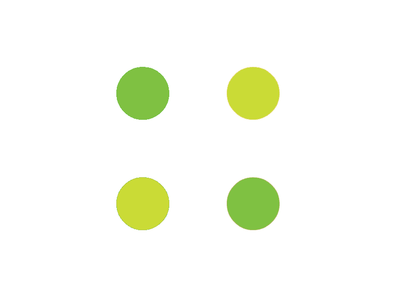

<section class="container">
    <div class="content" role="main">
        <div class="col-sm-3"> 
          <mat-sidenav-container  >
            <mat-sidenav-content>
              <nav>
                <mat-list>
                  <mat-list-item><svg id="twitter-logo" height="45" data-name="Logo — FIXED" xmlns="http://www.w3.org/2000/svg" viewBox="30 5 400 400">
                    <defs>
                      <style>
                        .cls-1 {
                          fill: none;
                        }
                        .cls-2 {
                          fill: rgba(217,217,217,1.00);
                        }
                      </style>
                    </defs>
                    <rect class="cls-1" width="45" height="45" />
                    <path class="cls-2" d="M153.62,301.59c94.34,0,145.94-78.16,145.94-145.94,0-2.22,0-4.43-.15-6.63A104.36,104.36,0,0,0,325,122.47a102.38,102.38,0,0,1-29.46,8.07,51.47,51.47,0,0,0,22.55-28.37,102.79,102.79,0,0,1-32.57,12.45,51.34,51.34,0,0,0-87.41,46.78A145.62,145.62,0,0,1,92.4,107.81a51.33,51.33,0,0,0,15.88,68.47A50.91,50.91,0,0,1,85,169.86c0,.21,0,.43,0,.65a51.31,51.31,0,0,0,41.15,50.28,51.21,51.21,0,0,1-23.16.88,51.35,51.35,0,0,0,47.92,35.62,102.92,102.92,0,0,1-63.7,22A104.41,104.41,0,0,1,75,278.55a145.21,145.21,0,0,0,78.62,23"
                    />
                  </svg> 
                </mat-list-item>
                <mat-list-item> <mat-icon>home</mat-icon>Home </mat-list-item>
                <mat-list-item (click)="openDialog()"> <mat-icon>settings</mat-icon>Setting </mat-list-item>
                </mat-list>
              </nav>
            </mat-sidenav-content>
          </mat-sidenav-container>
        </div>
        <div id="content" class="col-sm-6">
          <div class="component--header">
            <h2>Home</h2>
          </div>
          <div class="tweet--container">
            <div *ngIf="!tweetRows.length" class="loading">
              
            </div>
            <div class="row" *ngFor="let tweet of tweetRows | filter : searchText">
                <mat-card class="tweet">
                  <mat-card-content>
                    <div mat-card-avatar class="">
                        
                    </div>
                    <div class="tweet--data">
                      <mat-card-title>
                          {{ tweet.user.name }} 
                          <span class="subtitle">
                              <a target="_blank" href="https://twitter.com/{{tweet.user.screen_name}}">@{{ tweet.user.screen_name }}</a> • 
                              <a target="_blank" href="https://twitter.com/{{tweet.user.screen_name}}/status/{{tweet.id_str}}">{{ tweet.created_at | date }} </a> | 
                              {{ tweet.user.location }}
                          </span>
                      </mat-card-title>
                      <mat-card-content>
                        <p>{{ tweet.text }}</p>
                      </mat-card-content>
                      <mat-card-footer>
                          <div class=" mentions">
                            <div *ngIf="tweet.entities.user_mentions.length">
                              <a target="_blank" href="https://twitter.com/{{user.screen_name}}" *ngFor="let user of tweet.entities.user_mentions; index as i">
                                @{{ user.screen_name }} <i *ngIf="i < tweet.entities.user_mentions.length - 1">,</i>
                              </a>
                            </div>
                          </div>
                          <div class=" hashtags">
                            <div *ngIf="tweet.entities.hashtags.length">
                              <a target="_blank" href="https://twitter.com/hashtag/{{hashtag.text}}" *ngFor="let hashtag of tweet.entities.hashtags; index as i">
                                #{{ hashtag.text }} <i *ngIf="i < tweet.entities.hashtags.length - 1">,</i>
                              </a>
                            </div>
                          </div>
                        </mat-card-footer>
                    </div>
                  </mat-card-content>
                </mat-card>
              </div>
          </div>
        </div>
        <div id="tools--navbar" class="col-sm-3 ">
          <div class="search-form">
            <mat-form-field class="search-form-field full-width ">
                <mat-icon>search</mat-icon>
              <input matInput placeholder="Search Twitter" [(ngModel)]="searchText" >
            </mat-form-field>
          </div>
        </div>
      </div>
  </section>